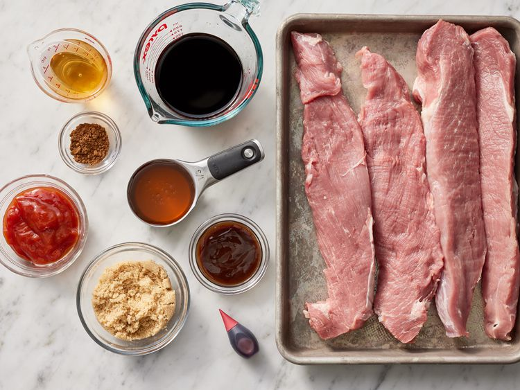
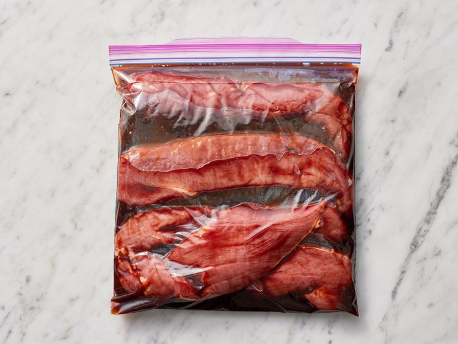
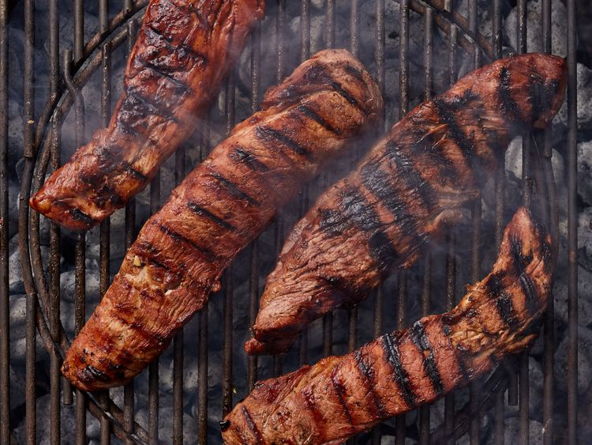
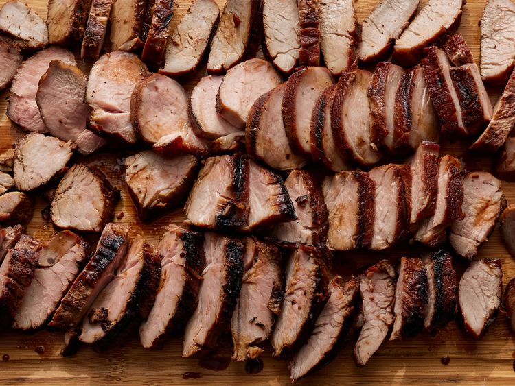

Photo by Dotdash Meredith Food Studios.
Char Siu Pork is Chinese restaurant-style pork with a deep red, sticky glaze. This version uses pork tenderloin and is easy to make at home on your charcoal BBQ. Enjoy the sweet and savory taste on its own or serve it over rice or noodles.
Step 1
Gather all ingredients.
Step 2
Stir soy sauce, honey, ketchup, brown sugar, rice wine, hoisin sauce, red bean curd, and five-spice powder together in a saucepan over medium-low heat. Cook and stir until just combined and slightly warm, 2 to 3 minutes.
Step 3
Meanwhile, slice each pork tenderloin lengthwise into 1 ½- to 2-inch-thick strips. Place pork strips in a large, resealable plastic bag.
Step 4
Pour marinade into the bag with the pork. Squeeze air from the bag, seal, and turn the bag a few times until pork is well coated. Marinate in the refrigerator, 2 hours to overnight.
Step 5
When ready to cook, preheat a charcoal grill for medium-high heat and lightly oil the grate.
Step 6
Remove pork from marinade and shake to remove excess liquid. Set aside the remaining marinade for basting.
Step 7
Rake the hot coals into two equal piles on opposite sides of the charcoal grate. Add a small container of water to the grate. Place pork strips in the center of the grate for indirect cooking.
Step 8
Cook pork over indirect heat, turning regularly and basting as desired, until an instant-read thermometer inserted into the center reads at least 145 degrees Farenheit (63 degrees Celsius), 30 minutes or longer.
Step 9
Serve hot and enjoy!
